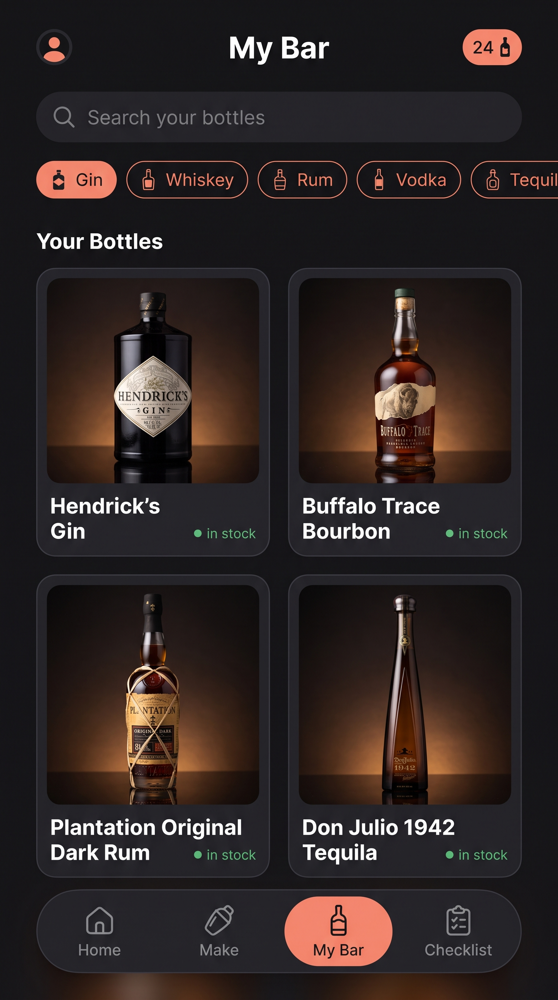
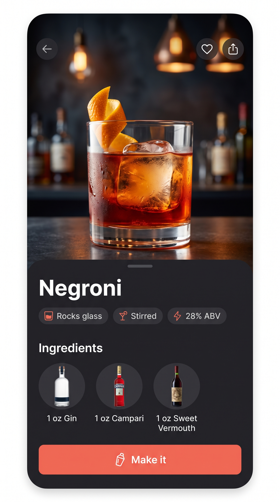
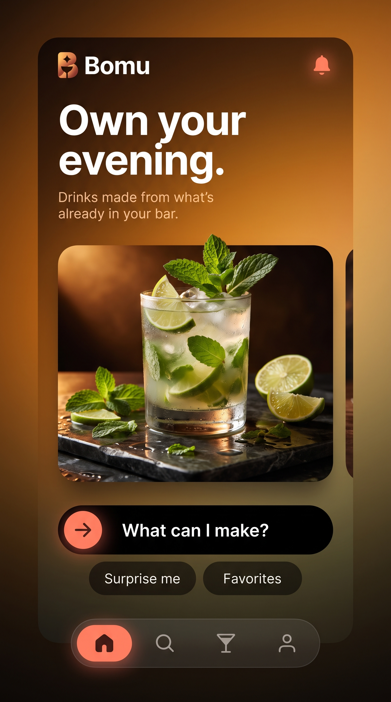
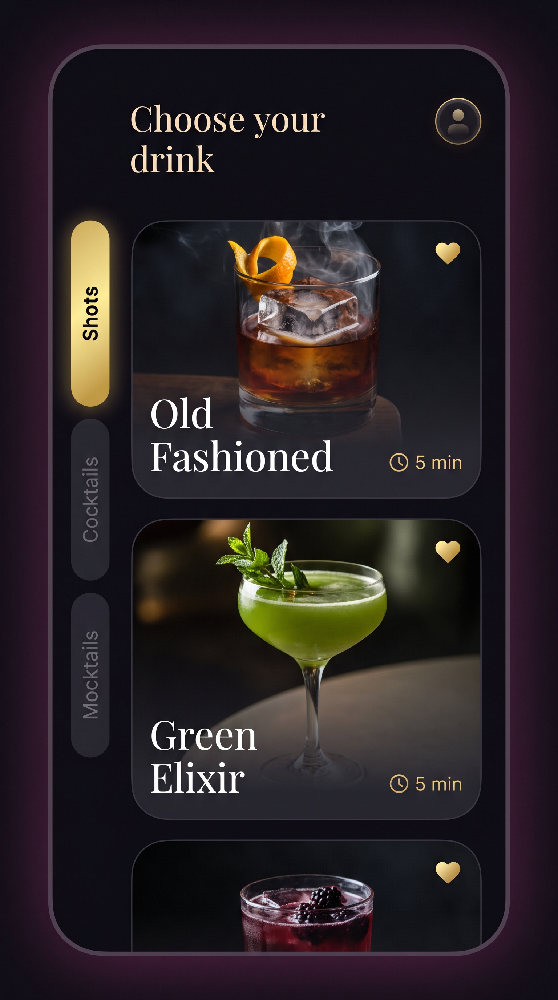
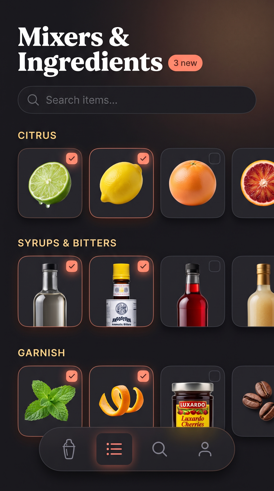

Bomu — Photography-Forward Concepts
Generated with nano-banana-pro at 2K, targeting your actual screens (Home, My Bar, Recipe, Make, Checklist) instead of a generic reference. All 6 landed on the first pass.
The honest gap: these look this good because of real-looking product photography (bottles, cocktails, garnish) composited into the layout. The layout/chrome (pills, cards, nav bar, gradients) is cheap — plain CSS. The photography is the expensive part: either you license/shoot real photos of your actual bottles and drinks, or generate a matching photo per cocktail/bottle with Nano Banana and cache it. That's a content pipeline, not a one-time CSS change. Worth doing, just sizing it correctly.

Home
Dark + product photography
Greeting header, pill category filters, "Ready to make" row with real cocktail photos, floating nav.
Chrome: CSSCards: need photos

My Bar
Bottle inventory grid
This is the one I'd prioritize — your bottle list is currently plain text rows. Real bottle photography here would feel like a completely different app.
Chrome: CSSCards: need photos

Recipe detail
Full-bleed photo + bottom sheet
Big hero cocktail photo, card overlaps the bottom like a bottom sheet, circular ingredient thumbnails. Directly lifted from your "Rum Bull Shot" reference.
Sheet: CSSHero + thumbs: need photos

Home — alt palette
Warm gradient hero
Closest to your "energy drink" reference's warmth, adapted to a single big hero card instead of a full-bleed background. "Own your evening" tagline direction.
Chrome: CSSHero: need photo

Make — alt layout
Side tab rail, serif heading
Vertical pill tabs on the left edge (Shots/Cocktails/Mocktails) instead of a top toggle. Elegant serif "Choose your drink." Closest to your beer-app and cocktail-app references.
Chrome: CSSCards: need photos

Checklist
Macro ingredient photography
Your current checklist is a plain checkbox list. This treats mixers/garnish like a grocery app — small square photo tiles grouped by category, checked state glows coral.
Chrome: CSSTiles: need photos
What I'd actually recommend
Don't try to reskin all 5 screens with new photography at once — that's a lot of image generation/curation and a real risk of things looking mismatched if styles drift between batches. Better sequence: 1) rebuild the CSS chrome (dark cards, pill chips, floating nav, gradients) across the whole app first — that's free, fast, and already a big visual jump. 2) Pick one screen to pilot real photography on — My Bar is the best candidate since it's currently the most text-heavy and boring. 3) If that pilot feels worth the upkeep (new bottle photo every time you add a bottle), extend the pattern to Recipe detail and Home.